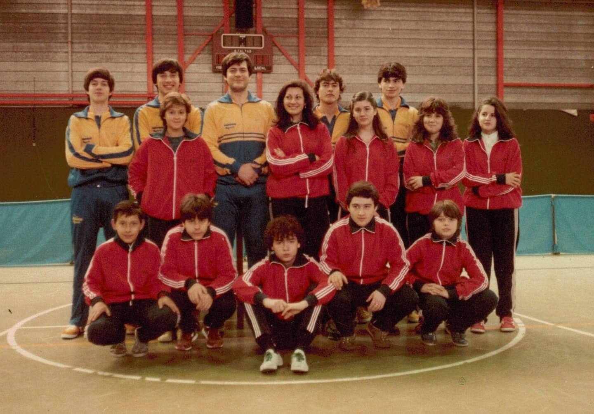
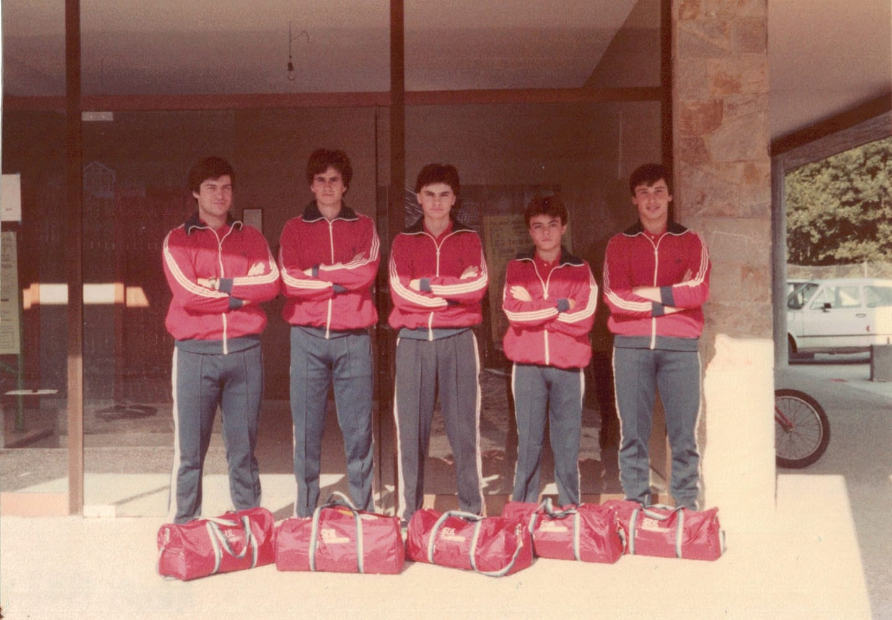
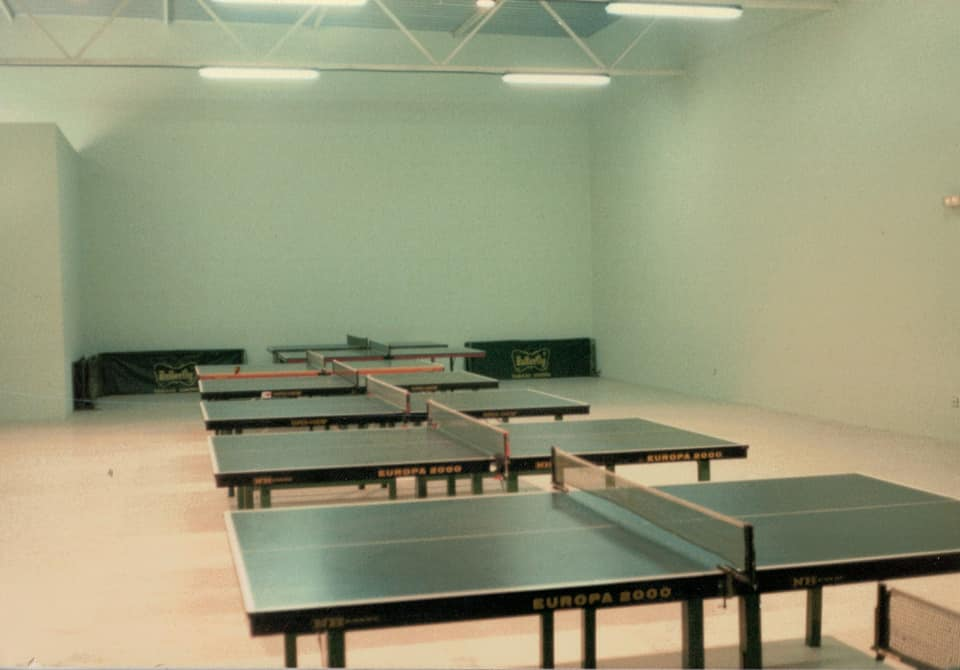
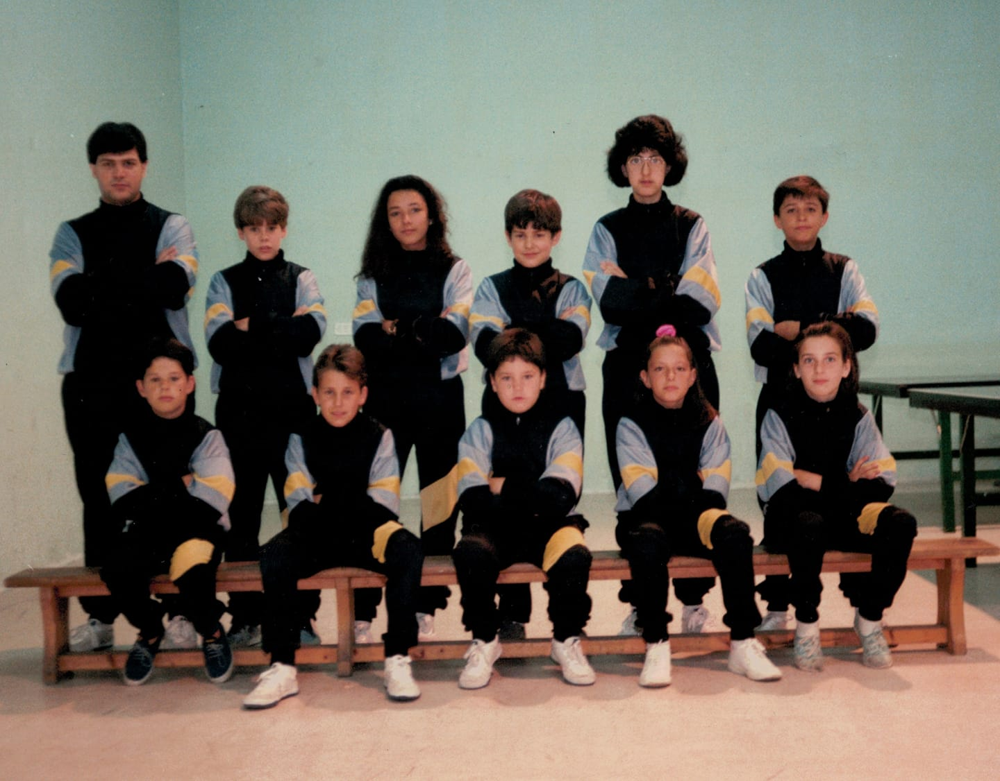
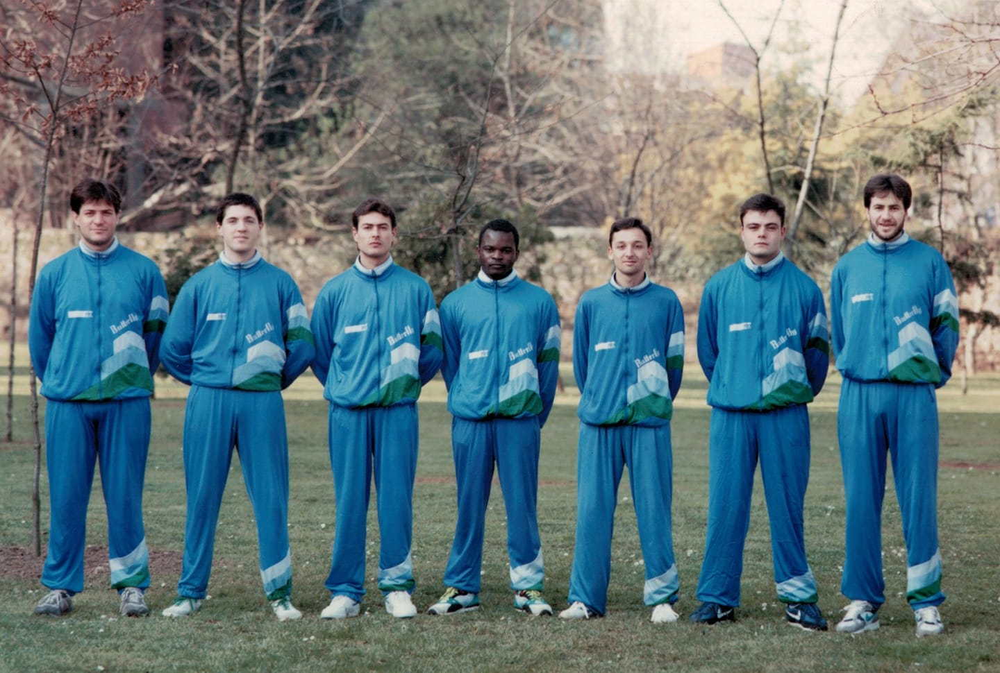
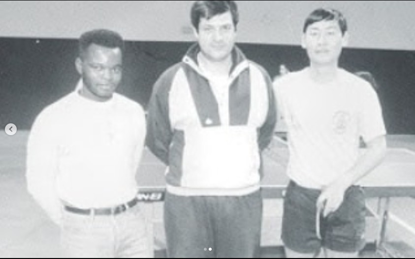
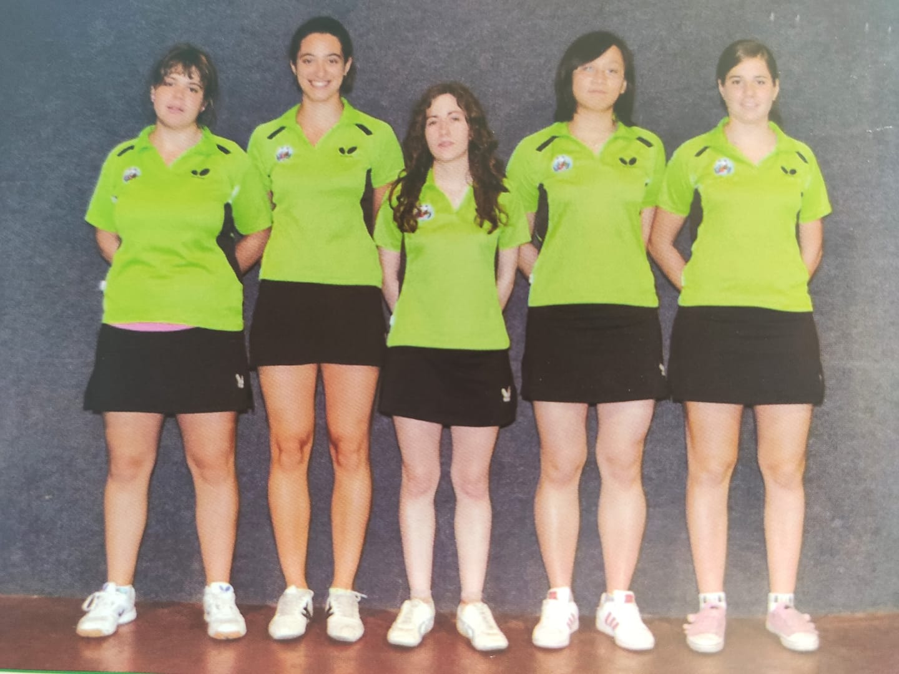

En 1982, antes de la creación del Club (1985), se formaron las Escuelas Municipales Deportivas de Avilés. En la imagen se puede ver la de Tenis de Mesa
Antes de fundarse el Club, se participó desde 1983 en Liga Nacional como Escuela Municipal de Avilés. La foto recoge a ese primer equipo que la disputó.
El 10 de setiembre de 1985 se funda el “Club Deportivo ENSIDESA Fundación Deportiva Municipal de Avilés” con la fusión de la Escuela Municipal Deportiva de Avilés y la sección de Tenis de Mesa del Grupo Empresa Ensidesa.
En el año 1990 se creó un centro de tecnificación dentro del propio club con los niños y niñas más destacados.
En la Temporada 1990-91, el Club Avilés asciende a la máxima categoría del Tenis de Mesa por primera vez manteniéndose en ella durante 7 temporadas. El equipo estuvo formado por Juan Carlos Paramá, Francisco Poyo, Jesús Pastrana, Wahab Ahmed, Federico Fajula, Félix González y Carlos Monforte.
En la temporada 95-96 el Avilés Tenis de Mesa se clasificó cuarto de la liga, lo que le dio plaza para jugar la ETTU Cup, el segundo torneo continental más importante para los clubes de tenis de mesa europeos.
El equipo femenino alcanzó la división de honor en la temporada 2000-2001. En la imagen se puede ver a la plantilla que consiguió este ascenso y disputó la máxima categoría nacional.
Actualmente el club participa cada año en los diferentes campeonatos de España de todas las categorías y tiene cuatro equipos en ligas nacionales de división de honor femenina, primera división masculina y femenina y segunda división masculina.
La asociación de la prensa deportiva asturiana premió al Club Avilés Tenis de Mesa en dos ocasiones con motivo de los ascensos en 1990 a división de honor masculina y en 2008 a superdivisión femenina. La Real Federación Española de Tenis de Mesa concedió al Club Avilés Tenis de Mesa, la medalla al mérito deportivo en su categoría de bronce en 1992.